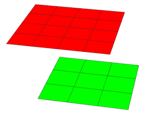

contextCount function (context query)
Syntax
float contextCount(target, label)
Parameters
- target (selector)
intra Checks against labeled shapes in the same shape tree (i.e. from the same inital shape). inter Checks against labeled shapes in other shape trees (i.e. generated by other initial shapes in the neighborhood). all Checks both intra and inter. - label (string)
The context query is performed only on shapes that match the requested label. Must not be empty. If the label is empty, 0 is returned.
Returns
The number of shapes with the given label. If no shape is found matching the specified label, 0 is returned.
Description
A context query that returns the number of shapes with the specified label in the environment.
Learn more about important characteristics for context queries in conditions and inter context.
Each label operation does not "label" the current shape but rather creates a new labeled shape that is counted separately.
Related
Example
 |
Lot --> split(x) { ~1 : Split }*
Split --> split(z) { ~1 : Tile }*
Tile --> label("Tile") Color
Color --> case contextCount(intra, "Tile") <= 9 : color(0,1,0)
else : color(1,0,0)
In this example the Lot rule is applied to a single initial shape (intra context). Depending on the size of the shape a different number of tiles is generated by the split operations. The contextCount query is used to color the tiles according to the total number of shapes with label "Tile". |
Copyright ©2008-2022 Esri R&D Center Zurich. All rights reserved.